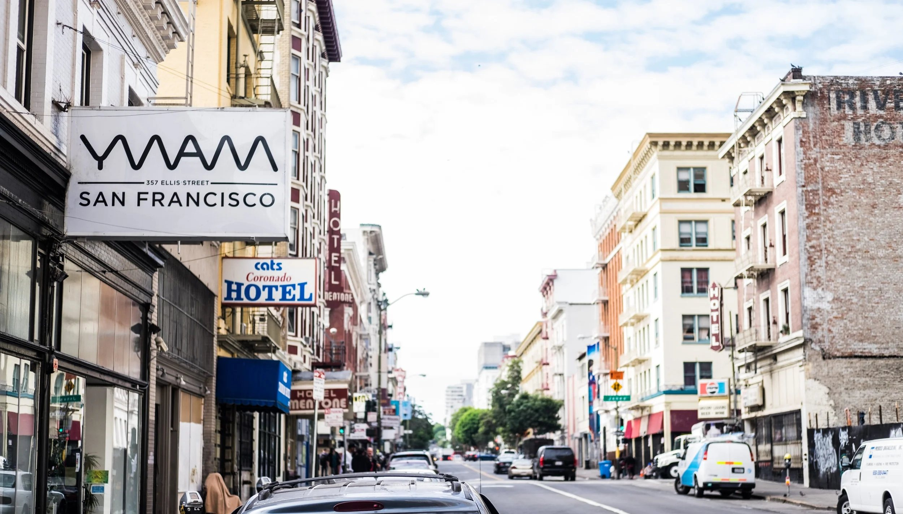
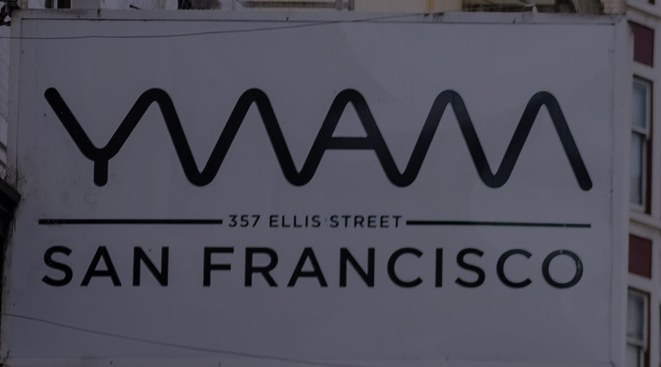
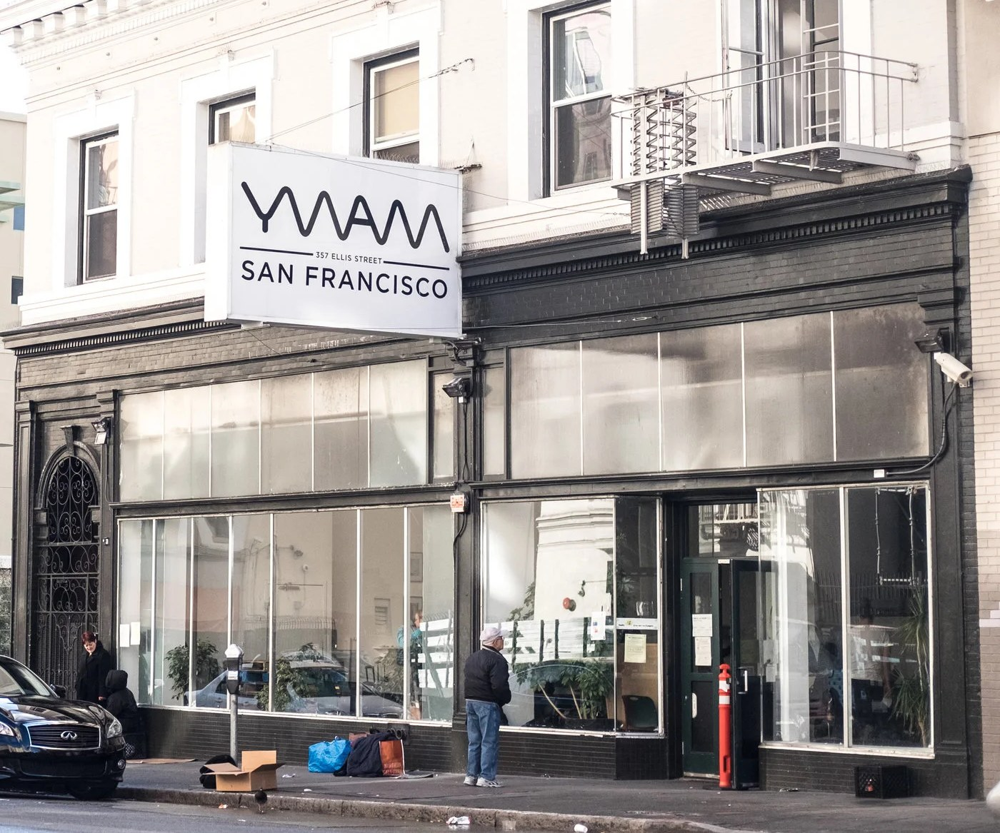
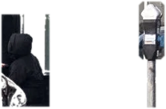

The love of Jesus is meant to be lived!
We believe people can change, neighborhoods can heal, and love can make a difference.
We’re here to be part of that. Our neighborhood is called the Tenderloin. We build relationships, create places to belong, meet practical needs, and share the love of Jesus with our neighbors.
Come and live this with us


Now showing on Ellis Street
We envision a Tenderloin where neighbors and the neighborhood are renewed, and where the Church is mobilized to share the love of Christ.
Two minutes inside YWAM San Francisco: the people, the street, and the everyday work of loving our neighbors.
The Ellis Room · greatest hits
 ThursdaysFood PantryFresh groceries for 300+ neighbors every week, with the SF-Marin Food Bank.
ThursdaysFood PantryFresh groceries for 300+ neighbors every week, with the SF-Marin Food Bank. Mon · Tue · Wed · FriThe Ellis RoomA safe place to land: coffee, conversation, donations and community.
Mon · Tue · Wed · FriThe Ellis RoomA safe place to land: coffee, conversation, donations and community. Friday nightsHot ChocolateA warm cup on a cold corner, and a conversation that follows.
Friday nightsHot ChocolateA warm cup on a cold corner, and a conversation that follows. Sunday morningsPop-Up ChurchWorship, a simple message and prayer, right on the sidewalk.
Sunday morningsPop-Up ChurchWorship, a simple message and prayer, right on the sidewalk. 2nd & 4th SundaysTenderloin ConnectVisiting neighbors in SRO buildings who are facing deep isolation.
2nd & 4th SundaysTenderloin ConnectVisiting neighbors in SRO buildings who are facing deep isolation. Mon · Tue · WedShowers & HaircutsHot showers, hygiene supplies and free haircuts, no questions asked.
Mon · Tue · WedShowers & HaircutsHot showers, hygiene supplies and free haircuts, no questions asked. MorningsBible StudySpace to explore faith together, housed or unhoused.
MorningsBible StudySpace to explore faith together, housed or unhoused. HolidaysCommunity MealsOne long table. 209 neighbors at Christmas lunch.
HolidaysCommunity MealsOne long table. 209 neighbors at Christmas lunch.
Neighborhood engagement
ThursdaysFood PantryFresh groceries for 300+ neighbors every week, with the SF-Marin Food Bank.Mon · Tue · Wed · FriThe Ellis RoomA safe place to land: coffee, conversation, donations and community.Friday nightsHot ChocolateA warm cup on a cold corner, and a conversation that follows.Sunday morningsPop-Up ChurchWorship, a simple message and prayer, right on the sidewalk.2nd & 4th SundaysTenderloin ConnectVisiting neighbors in SRO buildings who are facing deep isolation.Mon · Tue · WedShowers & HaircutsHot showers, hygiene supplies and free haircuts, no questions asked.MorningsBible StudySpace to explore faith together, housed or unhoused.HolidaysCommunity MealsOne long table. 209 neighbors at Christmas lunch.Follow God’s example, therefore, as dearly loved children and walk in the way of love, just as Christ loved us and gave himself up for us as a fragrant offering and sacrifice to God.Ephesians 5:1–2 · NIV


We believe restoration starts with relationship.
We believe everyone matters, everyone belongs, and everyone has something to give.
We believe love can change a neighborhood.
Sign me up!